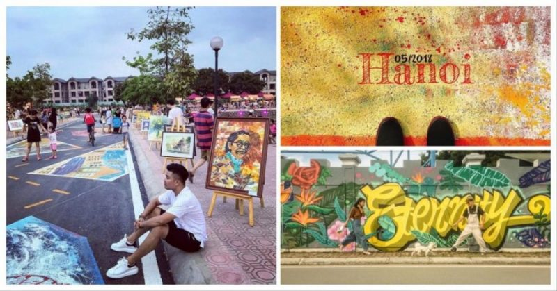

Hồ Tây (hay hồ Kim Ngưu, đầm Xác Cáo) là hồ nước ngọt tự nhiên thuộc địa phận quận Tây Hồ. Hồ được bao bọc bởi các trục đường Thanh Niên – Thụy Khuê – Âu Cơ – Nghi Tàm – Lạc Long Quân. Với diện tích lên tới 500 ha, Hồ Tây có chu vi xung quanh 1 vòng dài tới 17hm. Với phong cảnh rất đỗi nên thơ trữ tình và không gian thoáng đãng, rộng mở.
Đi chơi Hồ Tây vào thời gian nào trong năm cũng đẹp và thú vị. Mỗi mùa đều mang đến một trải nghiệm hoàn toàn mới mẻ và khác biệt. Bất cứ thời gian nào rảnh bạn hoàn toàn có thể cùng gia đình, bạn bè và người yêu đến đây vui chơi, vãn cảnh đều được.
Chắc chắn không thể bỏ qua công viên nước Hồ Tây khi đến tham quan tại đây. Vào những ngày thời tiết miền Bắc nóng bức thì nơi đây được xem là điểm đến lý tưởng nhất. Tới đây bạn có thể cùng gia đình, bạn bè tham gia nhiều hoạt động vui chơi giải trí dưới nước thú vị, độc đáo như: trượt ống, nhảy cầu, trượt cao tốc, trượt thảm, đu cáp treo… Lưu ý với trẻ nhỏ cần trang bị đầy đủ áo phao bơi cứu hộ đạt chuẩn chất lượng để đảm bảo tuyệt đối an toàn bạn nhé!
SUP hay còn gọi là chèo ván là môn thể thao mới lạ được giới trẻ Hà Thành rất yêu thích trong mùa hè này. Điểm cộng của môn thể thao dưới nước này là bạn hoàn được quyền chủ động đứng, ngồi tùy ý mà không hề gò bó. Với những người lần đầu tiếp xúc với SUP chỉ cần mất 15 đến 20 phút là đã nắm rõ được cách điều khiển ván và di chuyển trên nước được rồi.
Nếu có dịp ghé thăm Hà Nội nhất định bạn nên tham quan thung lũng hoa Hồ Tây ít nhất một lần. Thung lũng hoa Hồ Tây thuộc địa phận ngã 3 Nhật Chiêu, Tây Hồ. Nơi đây chỉ cách công viên nước chừng 600m. Bạn có thể kết hợp hành trình khám phá công viên nước và thung lũng hoa sẽ rất tiết kiệm thời gian. Ở thung lũng hoa có rất nhiều loại hoa màu sắc đa dạng khác nhau như: hoa oải hương, hoa cúc, hoa hồng, hoa xác pháo xanh,… Đặc biệt nơi đây còn thu hút du khách, những nhóm bạn, gia đình, cặp đôi nhờ sự quy hoạch tinh tế, đan xen nhiều ngôi nhà cối xay gió với xích đu, vườn trang trại… Đến đây bạn có thể thoải mái check-in lưu giữ nhiều khoảnh khắc tuyệt đẹp nhất. Đừng quên sắm sẵn máy ảnh du lịch nhỏ gọn, chất lượng để chụp thật nhiều ảnh bạn nhé!
Phố đi bộ Trịnh Công Sơn, đường Thanh Niên là hai điểm đến lý tưởng mà bất kỳ ai đến đây đều muốn trải nghiệm. Ở phố đi bộ Trịnh Công Sơn có rất nhiều gian hàng được thiết kế theo phong cách kiến trúc phố cổ Hội An. Còn đường Thanh Niên có rất nhiều cây xanh rợp bóng và view ngắm Hồ Tây cực chất. Bạn có thể cùng người thân, bạn bè khám phá 2 điểm đến thú vị này và chụp lại những khoảnh khắc độc đáo, thú vị nhất sẽ rất tuyệt.
Hồ Tây không chỉ hấp dẫn mọi người nhờ phong cảnh mặt hồ rất đỗi nên thơ trữ tình mà còn sở hữu nhiều địa điểm đi lễ chùa, tham quan các di tích nổi tiếng.Nếu đã đến Hồ Tây, hãy tham quan và khám phá nét văn hóa truyền thống lâu đời của dân tộc với các địa điểm sau: Chùa Trấn Quốc, Đình Nghi Tàm, Phủ Tây Hồ, Đền Quán Thánh và Chùa Bà Đanh. Đặc biệt những địa điểm này còn được xếp vào danh sách top 25 ngôi chùa thiêng nhất ở Hà Nội. Đến đây bạn vừa được tham quan vừa rời xa cuộc sống xô bồ, tấp nập để thả lỏng tâm hồn vào không gian thiêng liêng, thoãng đãng vô cùng.
Trở thành người đầu tiên bình luận cho bài viết này!